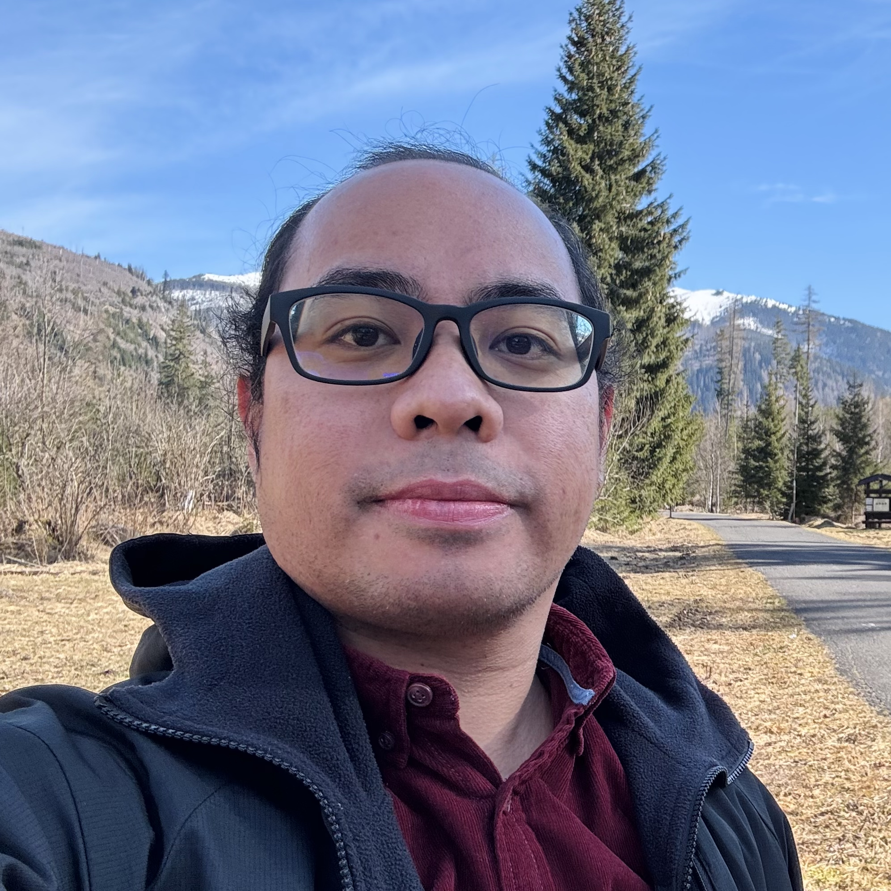

Julius Fergy Tiongson Rabago
Specially Appointed Assistant Professor, Kanazawa University, Japan
rabagojft[at]se.kanazawa-u.ac.jp

About
Hello! I'm Fergy. I am a Specially Appointed Assistant Professor at the Faculty of Mathematics and Physics, Kanazawa University. From November 2024 to October 2026, I was a JSPS Postdoctoral Fellow mentored by Professor Masato Kimura. Before that, I was a Postdoctoral Researcher working with Professor Hirofumi Notsu at the same faculty. I also served as an Adjunct Assistant Professor at Temple University, Japan Campus from January to October 2024.
My current research interests include stationary free boundary and free surface problems, moving boundary problems, geometric inverse problems, and applications of shape and topology optimization methods.
Email · Google Scholar · ResearchGate · ORCID · Scopus · researchmap
News
-
2026.09.14 New
35th Workshop on Mathematical Analysis for Nonlinear Phenomena -
2026.08.30
Our paper on theoretical and numerical studies of a Sobolev-gradient coupled complex boundary method for diffusion coefficient reconstruction has been published in The Science Reports of Kanazawa University (with S. P. Nainggolan and H. Notsu). -
2026.08.24–27
Mini-symposium on "Recent Advances in Numerical Shape and Topology Optimization Methods: From Theory to Practice" at The 19th SIAM East Asian Section Conference, Jeju Island, 2026 (co-organized with W. Gong and S. Zhu). -
2026.07.27 (citation details updated: 2026.10.09)
Our paper on a shape optimization approach for inverse diffusion problems using a single boundary measurement has been published as an Early Access article in Inverse Problems and Imaging (with M. Machida and H. Notsu). -
2026.07.24
Young Researchers Workshop on Applied Mathematics @ Kanazawa City, Ishikawa, Japan. -
2026.06.20–23
Continuum Mechanics Focusing on Singularities–Numerical Analysis & Scientific Computing 2026 @ Lapu-Lapu City, Cebu, Philippines. -
2026.05.13 Preprint
A new paper is up on arXiv on cavity shape reconstruction with a homogeneous Robin condition via a constrained coupled complex boundary method with ADMM, with M. Essahraoui, E. Cherrat, and L. Afraites. -
2026.04.21 Publication
Our paper titled "Enhanced shape recovery in advection–diffusion problems via a novel ADMM-based CCBM optimization" has been published in the Journal of Optimization Theory and Applications, Volume 209, Article Number 44, 2026 (with E. Cherrat and L. Afraites). -
2026.03.04 Preprint
A new paper is up on arXiv on statistical topological gradient and shape optimization for robust metal–semiconductor contact reconstruction, with L. Afraites, A. Hadri, and M. Hrizi. -
2026.02.02 Preprint
A new paper is up on arXiv on numerical methods for diffusion coefficient recovery, with S. P. Nainggolan and H. Notsu.
Education
- PhD Informatics (2020), Nagoya University, Nagoya, Japan, 2017.10 – 2020.09.28
- MSc Mathematics (2017), University of the Philippines Baguio, Baguio City, Philippines, 2015.01 – 2017.01.10
- PMAM Actuarial Science (2015), University of the Philippines Diliman, Quezon City, Philippines, 2011.06 – 2015.01.10
- BSc Mathematics (2010), University of the Philippines Baguio, Baguio City, Philippines, 2007.06 – 2010.10.22
Research
Keywords

- Free boundary problems
- Free surface problems
- Geometric inverse problems
- Moving boundary problems
- Shape optimization methods
- Topology optimization methods
Projects
Novel hybrid methods for accurate shape reconstruction: advancing theory and computational solutions
Co-Investigator (PI: Masato Kimura)
Grants-in-aid for JSPS Postdoctoral Fellows
Japan Society for the Promotion of Science
KAKENHI Grant Number JP24KF0221
JPY 2,400,000
2024.11.01 – 2027.03.31 (2026.10.31)
Development of effective and accurate non-conventional solution methods for shape inverse problems: theory and numerics
Principal Investigator
Grants-in-aid for Early-Career Scientists
Japan Society for the Promotion of Science
KAKENHI Grant Number JP23K13012
JPY 3,120,000
2023.04.01 – 2027.03.31 (2024.10.31)
(Discontinued as of October 31, 2024, due to the JSPS Postdoctoral Fellowship.)
The Analysis of Bernoulli free boundary problem using the velocity method and second-order perturbation of identity technique
Research Assistant (PI: Jerico Bacani)
Emerging Interdisciplinary Research
Office of the University of the Philippines Vice President for Academic Affairs
OVPAA-EIDR-C05-015
2014.08.01 – 2016.07.31
Journal Refereeing
- Acta Applicandae Mathematicae
- Applied Mathematics and Optimization
- Communications in Nonlinear Science and Numerical Simulation
- Computers & Mathematics with Applications
- Discrete and Continuous Dynamical Systems - S
- Fractional Calculus and Applied Analysis
- International Electronic Journal of Algebra
- International Journal of Computational Fluid Dynamics
- Inverse Problems
- Journal of Optimization Theory and Applications
- Mathematics and Computers in Simulation
- Modern Stochastics: Theory and Applications
- etc.
Papers
Bibliographic listings: MathSciNet · zbMATH
Preprints
TBA [PDF] · arXiv · doi
Cavity shape reconstruction with a homogeneous Robin condition via a constrained coupled complex boundary method with ADMM (in revision) [PDF] · arXiv:2605.12202
Statistical topological gradient and shape optimization for robust metal–semiconductor contact reconstruction (in revision) [PDF] · arXiv:2603.04216
Selected Publications
Theoretical and numerical studies of a Sobolev-gradient coupled complex boundary method for diffusion coefficient reconstruction The Science Reports of Kanazawa University, 69 (2026), 47–71. [PDF] · arXiv:2602.01656
Shape optimization for piecewise parameter identification in inverse diffusion problems with a single boundary measurement Inverse Problems and Imaging, 29 (2027), 181–226. [PDF] · arXiv:2503.14764 · doi:10.3934/ipi.2026049
Enhanced shape recovery in advection–diffusion problems via a novel ADMM-based CCBM optimization Journal of Optimization Theory and Applications, 209 (2026), Art. 44, 28 pp. [PDF] · arXiv:2508.16898 · doi:10.1007/s10957-026-02989-1
On the well-posedness of a Hele-Shaw-like system resulting from an inverse geometry problem formulated through a shape optimization setting ESAIM: Control, Optimisation and Calculus of Variations, 31 (2025), Art. 64, 65 pp. [PDF] · arXiv:2407.03083 · doi:10.1051/cocv/2025052
Numerical solution by shape optimization method to an inverse shape problem in multi-dimensional advection-diffusion problem with space dependent coefficients Applied Mathematics and Optimization, 92 (2025), Art. 13, 44 pp. [PDF] · arXiv:2504.07796 · doi:10.1007/s00245-025-10290-2
Localization of tumor through a non-conventional numerical shape optimization technique Applied Numerical Mathematics, 217 (2025), 135–171. [PDF] · arXiv:2502.20656 · doi:10.1016/j.apnum.2025.06.005
Simultaneous recovery of a corroded boundary and admittance using the Kohn-Vogelius method In Computational Methods for Inverse Problems and Applications, ICMDS 2024, Khouribga, Morocco, October 21–22, 2024, Springer Proc. Math. Stat., vol. 498, Springer, Cham, 2025, 73–89. [PDF] · arXiv:2506.17938 · doi:10.1007/978-3-031-89498-5_6
Detecting immersed obstacle in Stokes fluid flow using the coupled complex boundary method SIAM Journal on Control and Optimization, 63 (2025), no. 2, 822–851. arXiv:2403.11819 · doi:10.1137/24M1647369
A robust alternating direction method of multipliers numerical scheme for solving geometric inverse problems in a shape optimization setting Computers & Mathematics with Applications, 175 (2024), 19–32. arXiv:2301.10355 · doi:10.1016/j.camwa.2024.08.034
Boundary shape reconstruction with Robin condition: existence result, stability analysis, and inversion via multiple measurements Computational and Applied Mathematics, 43 (2024), Art. 270, 37 pp. [PDF] · arXiv:2404.05202 · doi:10.1007/s40314-024-02741-3
Comoving mesh method for multi-dimensional moving boundary problems: mean-curvature flow and Stefan problems Mathematics and Computers in Simulation, 221 (2024), 589–605. [PDF] · doi:10.1016/j.matcom.2024.03.020
Numerical solution to a free boundary problem for the Stokes equation using the coupled complex boundary method in shape optimization settings Applied Mathematics and Optimization, 89 (2024), Art. 2, 56 pp. [PDF] · doi:10.1007/s00245-023-10065-7
Shape reconstruction for advection-diffusion problems by shape optimization method: the case of constant velocity Discrete and Continuous Dynamical Systems Series S, 18 (2025), no. 1, 296–320. [PDF] · doi:10.3934/dcdss.2023186
Shape optimization methods for detecting an unknown boundary with the Robin condition by a single measurement Discrete and Continuous Dynamical Systems Series S, 18 (2025), no. 1, 43–76. [PDF] · doi:10.3934/dcdss.2022196
Numerical solution to the exterior Bernoulli problem using the Dirichlet-Robin energy gap cost functional approach in two and three dimensions Numerical Algorithms, 94 (2023), 175–227. [PDF] · doi:10.1007/s11075-023-01497-x
On the new coupled complex boundary method in shape optimization framework for solving stationary free boundary problems Mathematical Control and Related Fields, 13 (2023), no. 4, 1362–1398. [PDF] · doi:10.3934/mcrf.2022041
Comoving mesh method for certain classes of moving boundary problems Japan Journal of Industrial and Applied Mathematics, 39 (2022), 973–1001. [PDF] · doi:10.1007/s13160-022-00524-z
A second-order shape optimization algorithm for solving the exterior Bernoulli free boundary problem using a new boundary cost functional Computational Optimization and Applications, 77 (2020), 251–305. [PDF] · doi:10.1007/s10589-020-00199-7
A new energy-gap cost functional approach for the exterior Bernoulli free boundary problem Evolution Equations and Control Theory, 8 (2019), no. 4, 785–824. [PDF] · doi:10.3934/eect.2019038
An improved shape optimization formulation of the Bernoulli problem by tracking the Neumann data Journal of Engineering Mathematics, 117 (2019), no. 1, 1–29. [PDF] · doi:10.1007/s10665-019-10005-x
Shape optimization approach to defect-shape identification with convective boundary condition via partial boundary measurement Japan Journal of Industrial and Applied Mathematics, 36 (2018), no. 1, 131–176. [PDF] · doi:10.1007/s13160-018-0337-5
Shape optimization approach for solving the Bernoulli problem by tracking the Neumann data: a Lagrangian formulation Communications in Pure & Applied Analysis, 17 (2018), no. 6, 2683–2702. [PDF] · doi:10.3934/cpaa.2018127
Shape optimization approach to the Bernoulli problem: a Lagrangian formulation IAENG International Journal of Applied Mathematics, 47 (2017), no. 4, 417–424. [PDF]
On the second-order shape derivative of the Kohn-Vogelius objective functional using the velocity method International Journal of Differential Equations, 2015 (2015), Art. ID 954836, 10 pp. [PDF] · doi:10.1155/2015/954836
Talks
Upcoming Talks
-
Invited TBD
2026 Japan-Taiwan Joint Workshop on Inverse Problems and Related Topics
Lecture Room 32, School of Science Main Building, Tsushima campus, Okayama University, Japan, November 27–29, 2026.
Talk scheduled on November TBA, 2026.
Recent Talks
-
Topological and shape optimization methods for inverse shape reconstruction
Minisymposium on Recent Advances in Numerical Shape and Topology Optimization Methods: From Theory to Practice (organized by W. Gong, J. F. T. Rabago, and S. Zhu)
The 19th SIAM East Asian Section Conference
Oriental Hotel, Jeju Island, Korea, August 23–27, 2026. Talk scheduled on August 27, 2026. -
Invited Topological and shape optimization methods for inverse shape reconstruction in elliptic PDEs
Continuum Mechanics Focusing on Singularities–Numerical Analysis & Scientific Computing 2026
Lapu-Lapu City, Cebu, Philippines, June 20–23, 2026. Talk scheduled on June 20, 2026. -
Invited Coupling the coupled complex boundary method and ADMM for constrained shape optimization in geometric inverse problems
The 10th Young Scholar Symposium of East Asia Section of IPIA
National Taiwan University, Taipei, Taiwan, April 24–25, 2026. Talk scheduled on April 25, 2026. -
Invited Can we see the invisible? Mathematical methods for detecting hidden regions via shape and topological optimization
De La Salle University, Manila City, Philippines, March 11, 2026. -
Invited Shape identification in fluid flows via shape optimization
Workshop on Applied Mathematics and Scientific Computing
Kanazawa, Japan, January 28, 2026. -
Invited Non-conventional shape optimization via coupled complex boundary method for shape identification problems
Institute of Mathematics, University of the Philippines Diliman, Quezon City, Philippines, December 15, 2025. -
Invited Innovative Research Approaches in Mathematics and Engineering: Trends and Opportunities
Innovative Horizons: Advancing Research in Engineering Sciences and Mathematics
University of Saint Louis Tuguegarao, Tuguegarao, Philippines, November 20–21, 2025. On-line talk on November 20, 2025. -
Invited An inverse shape optimization approach for localizing subdermal tumors and burns
Faculty of Sciences and Techniques, Université Sultan Moulay Slimane, Beni Mellal, Morocco, November 4, 2025. -
Invited An inverse shape optimization approach for localizing subdermal tumors and burns
11th International Conference on Inverse Problems, Control and Shape Optimization (PICOF'2025)
Mehari Hammamet Hotel, Hammamet, Tunisia, October 28–31, 2025. Talk scheduled on October 30, 2025. -
Invited Numerical methods for transport coefficient recovery
2025 International Workshop on Modeling, Analysis and Computation with Application in Economics and AI & Joint Mathematics Symposium between Shanghai University of Finance and Economics and Kanazawa University
Shanghai University of Finance and Economics, Shanghai, China, October 25–26, 2025. Talk scheduled on October 25, 2025. -
Invited Inverse geometry via shape optimization: numerical solution and well-posedness from a moving boundary framework
Minisymposium on Recent Advances in PDE-constrained Optimizations (organized by W. Gong, S. Zhu, and Z. Zhou)
The Third HKSIAM Biennial Conference
The Chinese University of Hong Kong, Hong Kong, July 7–11, 2025. Talk scheduled on July 8, 2025. -
Inverse geometric reconstruction of subdermal burn region from thermal data
Minisymposium on Recent Advances in PDE-Constrained Optimization and Optimal Controls (organized by H. Fujiwara, W. Gong, and J. F. T. Rabago)
The 18th SIAM East Asian Section Conference
De La Salle University, Manila, Philippines, June 30–July 4, 2025. Talk scheduled on July 2, 2025. -
Invited Shape optimization for inverse geometry: numerical methods and well-posedness in a moving boundary setting
Shape Seminar
東北大学 レジリエント社会構築イノベーションセンター 306 大会議室, June 23, 2025. -
Invited Shape optimization for improved diagnosis: tumor localization and burn depth assessment
Mathematical Society of the Philippines - CAR, Regions 1 and 2 Chapter: Mathematics Webinar Series
online, May 24, 2025. -
Localization of tumor through a non-conventional numerical shape optimization technique
Workshop on Modeling and Numerical Analysis of Nonlinear Phenomena 2025
Shiinoki Cultural Complex, Kanazawa, Japan, March 16–17, 2025. Talk scheduled on March 16, 2025. -
Simultaneous reconstruction of shape and coefficients for corrosion detection via the Kohn-Vogelius approach
第21回日本応用数理学会研究部会連合発表会
岡山大学津島キャンパス、2025年3月5日〜3月7日. Talk scheduled on March 5, 2025. -
Invited Obstacle detection in Stokes fluid flow using a novel shape optimization approach
Russia-Japan-India Workshop "Mathematical analysis of fracture phenomena for elastic structures and its applications"
via MS Teams, December 11–13, 2024. Talk scheduled on December 12, 2024. -
Invited A Non-Conventional Reconstruction Approach for Parameter Identification in Inverse Optical Tomography with Single Boundary Measurement
Inverse Days 2024
Lapland Hotel Oulu, Oulu, Finland, December 10–13, 2024. Talk scheduled on December 11, 2024. -
Invited Applications of Moving Meshes in Numerical Shape Optimization and Moving Boundary Problems
RIMS joint research on the Development of Numerical Analysis that Contributes to Computational Science
RIMS共同研究・計算科学に資する数値解析学の展開
Kyoto University, Kyoto, Japan, October 23–25, 2024. Talk scheduled on October 23, 2024. -
Invited Non-conventional shape optimization techniques for shape identification problems
Workshop for Young Scholars: Control and Inverse Problems on Waves, Oscillations and Flows - Mathematical Analysis and Computational Methods
若手研究集会「波動・振動・流れの制御と逆問題 -理論と数値計算-」
Kyoto University, Kyoto, Japan, September 24–25, 2024. Talk scheduled on September 25, 2024. -
Invited Numerical shape optimization method for parameter identification problems in diffuse optical tomography with a non-convex boundary interface using a single boundary measurement
日本応用数理学会2024年度年会
京都大学、2024年9月14日–16日. Talk scheduled on September 14, 2024. -
A non-conventional shape optimization method for shape identification problems
Minisymposium on Recent Advances in Numerical Shape Optimization Methods: From Theory to Practice (organized by W. Gong, S. Zhu, and J. F. T. Rabago)
The 17th SIAM East Asian Section Conference
University of Macau, Macao SAR, China, June 26–July 1, 2024. -
Invited Obstacle detection in Stokes fluid flow using a novel shape optimization approach
Minisymposium on Interface motion in complex systems (organized by M. Benes and K. Sakakibara)
ALGORITMY 2024: Central-European Conference on Scientific Computing
High Tatra Mountains, Slovakia, March 15–20, 2024. -
Invited Non-conventional approximation procedures for parameter identification problems
第20回日本応用数理学会研究部会連合発表会
長岡技術科学大学、2024年3月4日〜3月6日. -
On the application of Alternating Direction of Method of Multipliers to shape identification problems
第20回日本応用数理学会研究部会連合発表会
長岡技術科学大学、2024年3月4日〜3月6日. -
On the coupled complex boundary method for obstacle shape recovery in Stokes fluid flow
第25回研究集会数理設計研究部会
香川大学町キャンパス、2023年12月19日. -
Detecting immersed obstacle in Stokes fluid using coupled complex boundary method
2023 Joint Meeting on Applied Mathematics, Organized by the Mathematical Society of Japan
Faculty of Advanced Science and Technology, Ryukoku University, Seta Campus, Otsu, Shiga, Japan, December 14–16, 2023. -
Invited Non-conventional shape optimization methods for solving shape inverse problems
Minisymposium on Shape Optimization and Inverse Problems (organized by L. Afraites, A. Laurain, and J. F. T. Rabago)
Applied Inverse Problems 2023
University of Göttingen, Göttingen, Germany, September 4–8, 2023. -
Invited Numerical solution to a free boundary problem for the Stokes equation using the coupled complex boundary method in shape optimization setting
Minisymposium on Interface motion and related topics (organized by M. Beneš and T. Ishiwata)
International Congress on Industrial and Applied Mathematics 2023
Waseda University, Tokyo, Japan, August 20–25, 2023.
Teaching
Part-Time Lecturer, Graduate Course: Applied Analysis
Kanazawa University, Kanazawa City, Japan
2026.04.06 – 2026.06.04, Q1
2025.04.07 – 2025.06.04, Q1
2024.04.08 – 2024.06.05, Q1
2023.04.06 – 2023.06.05, Q1
Adjunct Assistant Professor, Undergraduate Courses: College Algebra
Temple University, Japan Campus, Setagaya City, Japan
2024.08.26 – 2024.12.18 (2024.10.31), Fall 2024
2024.05.20 – 2024.08.07, Summer 2024
2024.01.08 – 2024.05.01, Spring 2024
Lecturer, Undergraduate Course: Pre-Calculus
University of the Philippines Baguio, Baguio City, Philippines
2015.01.22 – 2015.06.08
Instructor, Undergraduate Courses: Mathematical Biology, Elementary Analysis, and Calculus
Central Luzon State University, Science City of Muñoz, Nueva Ecija, Philippines
2013.11.12 – 2014.04.30, AY 2013-2014, 2nd Semester
Lecturer, Undergraduate Courses: Elementary Analysis, Calculus, and Pre-Calculus
Central Luzon State University, Science City of Muñoz, Nueva Ecija, Philippines
2013.06.10 – 2013.10.18, AY 2013-2014, 1st Semester
2012.11.19 – 2013.03.27, AY 2012-2013, 2nd Semester
2012.06.13 – 2012.10.26, AY 2012-2013, 1st Semester
2012.04.02 – 2012.05.11, AY 2011-2012, Summer
2011.11.08 – 2012.03.23, AY 2011-2012, 2nd Semester
2011.06.06 – 2011.10.21, AY 2011-2012, 1st Semester
2011.04.11 – 2011.05.27, AY 2010-2011, Summer
Research Meetings and Seminars
- 研究集会等の情報 (Informations on Research Meetings, etc)
- 現象数理解析研究会 (Workshop on Mathematical Analysis for Nonlinear Phenomena)
- 金沢解析セミナー (Kanazawa Analysis Seminar)
- 微分方程式とデータサイエンス研究会 (Differential Equations in Data Science)
- 現象数理解析研究会 (Workshop on Mathematical Analysis for Nonlinear Phenomena)
- Shape Seminar
Events
The 22nd Workshop on Mathematical Analysis for Nonlinear PhenomenaInternational Conference: Differential Equations for Data Science 2025 (DEDS2025), Kyoto, JapanWorkshop on Modeling and Numerical Analysis of Nonlinear Phenomena 2025 (MNANP2025), Kanazawa, JapanInternational Workshop on Computational and Mathematical Methods in Data Science 2025 (CoMaDS2025), Boracay, Aklan, PhilippinesThe 18th SIAM East Asian Section Conference (EASIAM2025), Manila, PhilippinesCzech Academy of Sciences–Kanazawa University Workshop, Kanazawa, Ishikawa, JapanSEAMS School 2025 Baguio (Inverse Problems and Optimal Control), Baguio, PhilippinesAMSC 2026: Workshop on Applied Mathematics and Scientific Computing, Kanazawa, Ishikawa, JapanCoMFos-NASC 2026, Lapu-Lapu City, Cebu, Philippines3rd AMSC 2026: Workshop on Applied Mathematics and Scientific Computing, Kanazawa, Ishikawa, Japan
Contacts
Postal Address
Room 211, Building C4 (Telephone Number: +81-76-264-6129)Faculty of Mathematics and Physics
研究室２１１自然科学５号館
理工研究域 数物科学系
Institute of Science and Engineering
Kanazawa University, Kakuma Campus
Kanazawa, 920-1192, Ishikawa, Japan
E-Mail Addresses
- rabagojft[at]se.kanazawa-u.ac.jp
- jftrabago[at]gmail.com
- jfrabago[at]gmail.com